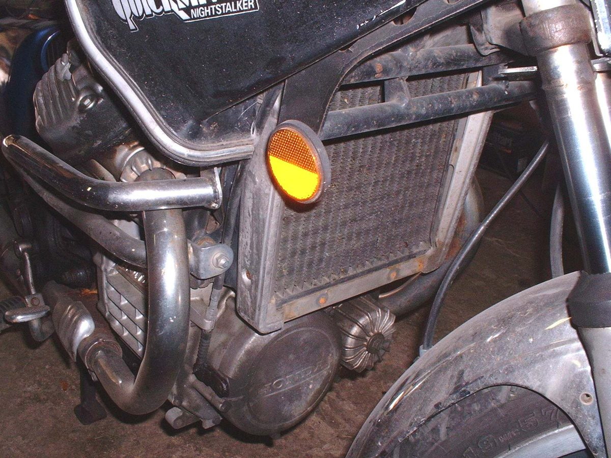

Repair / Cooling
Cooling
Problems, repairs and parts for the cooling.

Problems
Repairs
- Check the engine oil levelRider job · 5 to 10 min (estimate, includes warm-up and settling)
- Check air cooling (fins, airflow, mixture)Rider job · 20 to 40 min
- Read a spark plugHome workshop · 10 to 15 min, plus a short ride
- Find an intake air leakHome workshop · 20 to 45 min
- Check and adjust valve clearanceHome workshop · 45 to 90 min (estimate, screw-and-locknut type)
- Check the ignition timingWorkshop job · 30 to 60 min assessment
- Check for brake dragHome workshop · 15 to 30 min
- Test engine compressionHome workshop · 30 to 45 min
- Read engine fault codes (fuel injection)Home workshop · 15 to 30 min
- Check and top up coolantRider job · 5 to 10 min
- Find a coolant leakHome workshop · 30 to 60 min
- Test the radiator fan and its switchHome workshop · 30 to 45 min
- Check the thermostatWorkshop job · 30 min assessment; 1 to 2 h replacement
- Replace the coolantHome workshop · 45 to 90 min
- Do a leak-down testWorkshop job · 30 to 60 min
- Check fuses and relaysRider job · 10 to 30 min
- Find a wiring faultHome workshop · 30 to 90 min
- Check the engine sensors (TPS, MAP, temperature)Workshop job · 10 min for home checks; 30 to 90 min at a workshop